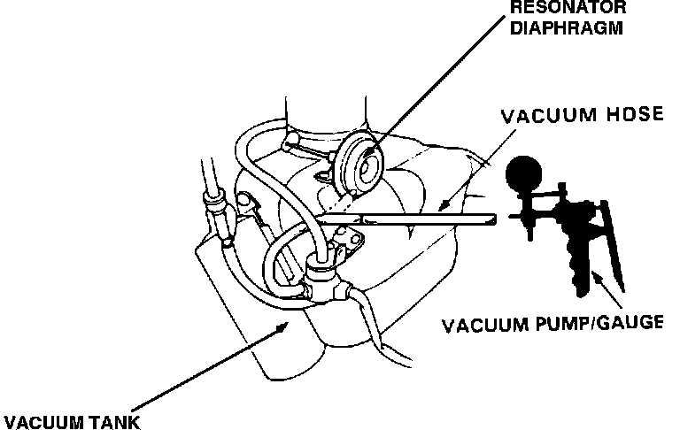
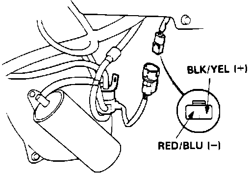

Resonator: Testing and Inspection
Resonator System Testing:

1. Start engine and allow to idle.
2. Remove vacuum line from resonator diaphragm and connect to vacuum gauge.
Vacuum, proceed to step 13.
No vacuum, proceed to next step.
3. Remove vacuum hose from vacuum tank and check for vacuum.
Vacuum, proceed to step 5.
No vacuum, proceed to next step.
4. Repair blockage or vacuum leak between vacuum tank and intake manifold.
Resonator Control Solenoid Connector Identification:

5. Disconnect 2 wire connector from resonator control solenoid.
6. Measure voltage between BLK/YEL and RED/BLU wires at connector.
Battery voltage, replace resonator control solenoid. End of test.
No battery voltage, proceed to next step.
7. Measure voltage between BLK/YEL wire and ground.
Battery voltage, proceed to step 9.
No battery voltage, proceed to next step.
8. Check fuse #9 in under dash fuse box. If fuse is OK repair open BLK/YEL wire between fuse box and resonator control solenoid.
9. Turn ignition switch off.
10. Install test harness between ECU and harness connector. If test harness is not available, carefully backprobe wires at ECU connector.
11. Check for continuity between ECU terminal B3 and RED/BLU terminal at resonator control solenoid connector.
Continuity, replace electronic control unit. End of test.
No continuity, proceed to next step.
12. Repair open RED/BLU wire between ECU terminal B3 and resonator control solenoid. End of test.
13. Raise engine speed to 3800 rpm and check vacuum gauge.
Vacuum, proceed to next step.
No vacuum, system functioning properly. End of test.
14. Disconnect 2 wire connector at resonator control solenoid.
15. Turn ignition off.
16. Remove connector B from ECU only, leave connected to main harness.
17. Check for continuity to ground on RED/BLU wire at terminal B3.
Continuity, proceed to next step.
No continuity, replace electronic control unit. End of test.
18. Repair short to ground on RED/BLU wire between ECU terminal B3 and resonator control solenoid.